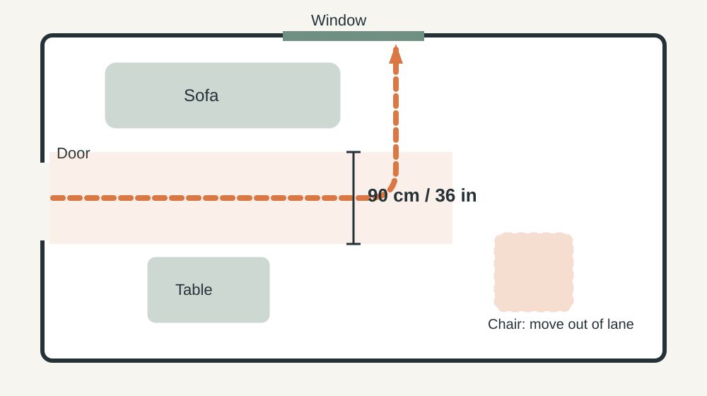

HOME DESIGN · PRACTICAL GUIDE
How to make a room feel calmer without buying everything new
A calmer room is usually less about adding things and more about removing friction: visual noise, harsh light, awkward storage and furniture that asks too much of the space.

1. Start with what your eyes notice first
Stand at the doorway and let your eyes move naturally. The first three objects that demand attention are your clues: a crowded coffee table, an overfilled shelf or a large piece of furniture pressed against a walkway can make a room feel busy before you use it. Remove one obvious item, step back and look again; do not attack the whole room at once.
Two fast tests: squint until the room blurs, and whatever still jumps out is your visual noise; or take a photo, because a photo shows the clutter your eyes stopped noticing. The aim is to learn what creates visual noise, not to create an empty room.

2. Protect the walking path
Comfort depends on movement as much as appearance. Identify the routes you use every day (door to sofa, sofa to kitchen, bed to wardrobe, desk to printer). If you keep stepping around a chair or moving an object to pass, the layout is telling you something.

| Route | Aim for |
|---|---|
| Routes you use most | About 90 cm (36 in) |
| Side routes | No less than about 60 cm (24 in) |
Measure it, do not guess. Lay two strips of painter's tape that far apart from the door to the sofa and live with them for three days. Whatever sits inside the tape, whether a chair leg, a basket or a floor lamp, is what you keep stepping around. Quick check: carry a laundry basket along the route; if you have to turn sideways, the path is too narrow.
Test changes before making them permanent: move a small table for a day, turn a chair slightly, remove a floor basket you rarely use.
Safety first. Ask someone to help with heavy furniture and lift it rather than dragging it, which can damage floors and strain your back. Keep cords out of walking routes, and secure tall or top-heavy furniture to the wall after moving it.
3. Change the light before the furniture
One strong ceiling light can make a room flat and harsh even when the layout works. Try the lamps you already have at different heights: a lower pool of light makes a seating area feel more intentional, and brighter task light can stay near detailed work.

Quick rules that work: choose warm bulbs (about 2700K) in living spaces, keep the lamp shade low enough that the bulb is not at eye level when you sit, stay within each lamp's maximum wattage, and switch the overhead light off for an evening test. If you only need light for one task, light the task and let the rest of the room fall away. In the evening, use fewer but better-positioned lights; the aim is not to make every corner equally bright.
4. Give everyday objects a home close to where they are used
Storage works best when the correct action is easy: a basket beside the sofa for cables or blankets, a small tray for keys on a console, a hook near the door for the jacket that otherwise lands on a chair. None of this needs a large organizing system. Start with the object that repeatedly becomes clutter and give it a home where you naturally reach for it.
5. Reduce visual competition
Rooms get noisy when many objects compete for attention. You do not need to remove personality: group related items and let a few useful or meaningful pieces lead. A shelf with ten unrelated objects feels busier than the same ten in two or three clear clusters.

The rule of three: on any shelf, aim for two or three clusters, with about a third of the shelf left empty so the eye has somewhere to rest.
Put uncertain items in a temporary box for a week. If you do not look for them, they do not need to stay visible.
6. Make the main surface easier to maintain
Choose one surface that should stay mostly clear (dining table, kitchen counter, desk or coffee table) and give it a simple rule, for example only the lamp, a small tray and one current item. This is not strict minimalism: it creates a visible “reset point,” so when the room starts to feel busy you know where to begin.
7. Do not buy storage for things you have not decided to keep
Storage can hide a decision instead of solving it. Before buying a cabinet, basket set or organizer, remove obvious duplicates, broken items and things that belong elsewhere, then measure what is left. Choose storage by frequency and location: daily items easy to reach, occasional items farther away. A beautiful container that makes everyday access harder is not an improvement.
8. Try a 30-minute reset
- Clear one visible surface.
- Remove five things that do not belong.
- Turn off the overhead light and test a lower lamp.
- Move one piece of furniture to improve a real walking path.
- Give one recurring clutter item a nearby home.
- Stop before you start shopping.
Take a photo before and after if you want an objective comparison. The useful question is not whether the room looks expensive; it is whether you can move, find things and reset the space more easily.
9. Build a reset that fits normal life
A room stays calm when upkeep is cheap. Pick a short weekly routine: clear the main surface, return misplaced items, empty the temporary box and check the walking path. If the reset takes an hour, the system is too complicated. Let the room evolve: a good setup is adjustable rather than perfect.
10. Know when buying something is actually justified
Shop when you can describe the remaining problem precisely: a narrow lamp because the existing one blocks a walkway, or a closed container because dust is affecting an item you use often. If all you can say is “the room just feels wrong,” wait; another round of removing, moving and testing may reveal the answer.
Common mistakes that keep a room feeling busy
- Buying storage before removing duplicates and things you have not decided to keep.
- Trying to clear every surface instead of protecting one main surface.
- Moving furniture without checking the routes you walk every day.
- Relying on one strong ceiling light and ignoring lamps you already own.
- Putting many unrelated objects on one shelf instead of grouping related items.
- Building a reset that takes an hour, so it stops happening.
Frequently Asked Questions
Where should I start if a room feels overwhelming?
Start at the doorway and fix the first three visual distractions rather than reorganizing the entire room.
Should I buy storage before decluttering?
Usually no. Remove what you do not need first, then choose storage for what remains.
How can I make a room feel calmer cheaply?
Clear surfaces, improve the mix of light, simplify visible objects and protect a useful walking path before buying anything.
Does moving furniture really make a room calmer?
It can when furniture blocks a useful path or makes everyday tasks awkward. Test one small layout change before committing.
How often should I reset the room?
A short weekly reset is usually easier to maintain than waiting for clutter to become a large project.
What if a calm room still feels visually busy?
Look at the largest repeated distractions first: exposed piles, crowded surfaces, awkward paths, or too many competing focal points. Change one category at a time and keep the parts of the room that are useful.
The goal is not an empty room. It is a room that asks less of you.
For lighting automation, see smart lighting without turning your home into a gadget showroom. For a practical entrance, try quiet entryway storage guide.